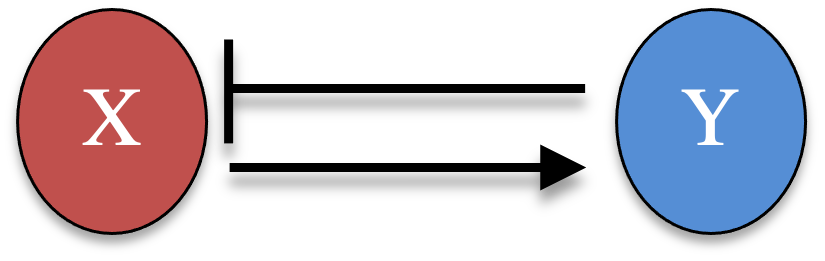
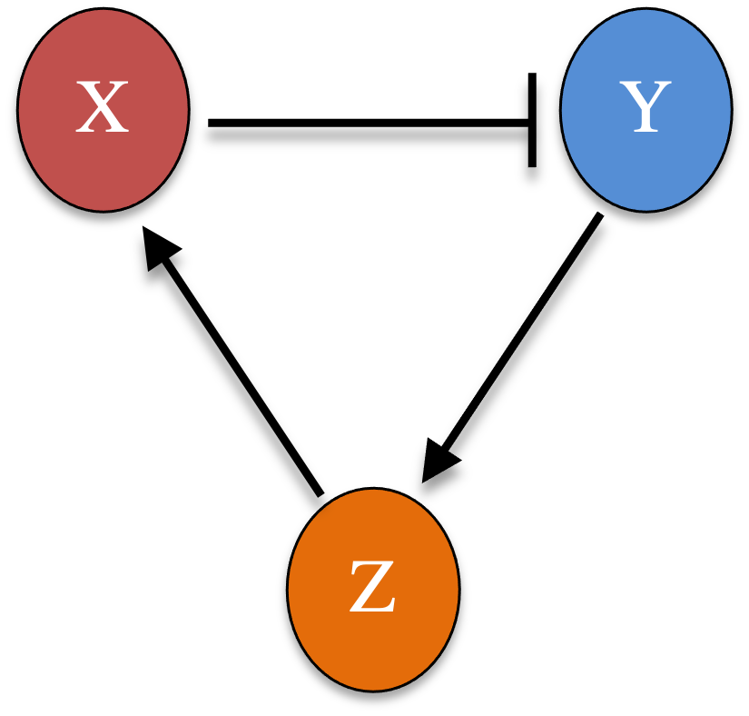
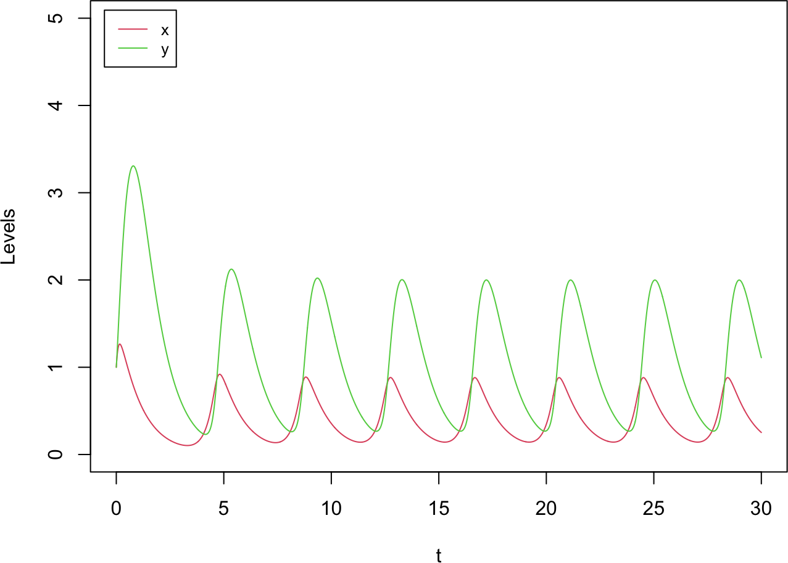
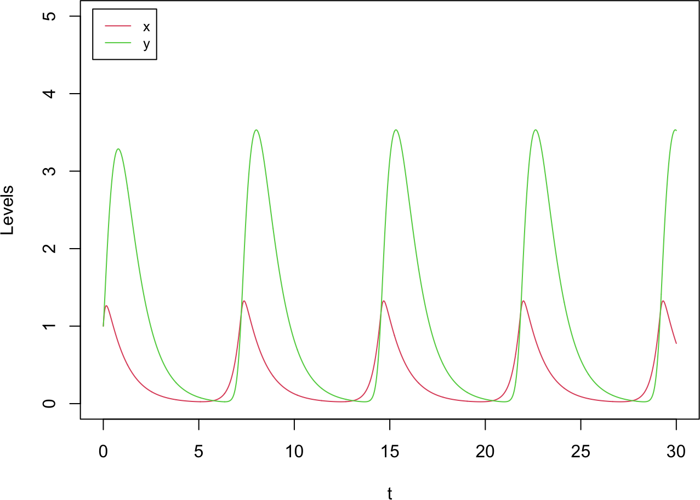

A time delay often stands in for a chain of intermediate steps left out of a model. A delayed edge from gene \(A\) to gene \(B\) can instead be written as an explicit intermediate node \(C\) with edges \(A \to C \to B\): the time it takes to build up \(C\) becomes the lag. This chapter makes that idea concrete by comparing a delayed two-node negative-feedback loop with longer, undelayed feedback loops, and finding that they behave alike. We integrate ODEs with a second-order Heun scheme and DDEs with its delay version from Part 4B.
4C.1 A two-node negative-feedback loop
Consider two genes where \(X\) activates \(Y\) and \(Y\) represses \(X\), a negative-feedback loop.

After nondimensionalization,
\[\begin{equation}
\begin{cases}
\dfrac{dx}{dt} = \dfrac{g}{1 + y^3} - x \\[2mm]
\dfrac{dy}{dt} = \dfrac{h\,x^3}{1 + x^3} - y
\end{cases} \tag{1}
\end{equation}\]
with maximum production rates \(g\) and \(h\). With \(g = h = 10\) and no delay, the loop relaxes to a stable steady state.
NoteRecipe 4C.1.1
Objective. Simulate a two-gene negative-feedback loop without any delay, as a baseline.
Model. A nondimensional two-node loop where X activates Y and Y represses X (Hill coefficient 3, unit degradation), dx/dt = g/(1 + y^3) - x, dy/dt = h*x^3/(1 + x^3) - y.
Method. The generic multi-variable Heun integrator (ordinary, no delay).
Test.g = 10, h = 10; initial (x, y) = (1, 1); dt = 0.01, to t = 10.
Show. A time-series plot of x and y relaxing to a steady state.
Verification. With no delay the loop simply relaxes to a stable steady state, with no oscillation.
Instead of a delay, we can lengthen the loop with real intermediate genes. A three-node ring, \(X \to Y \to Z \dashv X\) (two activations and one repression, so the feedback is still negative), is
\[\begin{equation}
\begin{cases}
\dfrac{dx}{dt} = \dfrac{g}{1 + z^3} - x \\[2mm]
\dfrac{dy}{dt} = \dfrac{h\,x^3}{1 + x^3} - y \\[2mm]
\dfrac{dz}{dt} = \dfrac{l\,y^3}{1 + y^3} - z
\end{cases} \tag{3}
\end{equation}\]

With \(g = h = l = 10\) and no delay at all, the three-node loop already oscillates, though with a shorter period than the delayed two-node loop. Adding a fourth node (\(X \to Y \to Z \to W \dashv X\)) lengthens the period further and brings the dynamics closer to the \(\tau = 2\) delayed case:
A time delay and a chain of intermediate reactions are thus two ways to model the same lag.
NoteRecipe 4C.3.1
Objective. Show that a chain of intermediate genes can stand in for a delay in producing oscillations.
Model. Undelayed repression rings that replace the delay with explicit intermediate genes. Three-node ring (X activates Y activates Z, Z represses X): dx/dt = g/(1 + z^3) - x, dy/dt = h*x^3/(1 + x^3) - y, dz/dt = l*y^3/(1 + y^3) - z. Four-node ring: the same chain with a fourth gene W between Z and X, dx/dt = g/(1 + w^3) - x, …, dw/dt = m*z^3/(1 + z^3) - w. Every edge is a Hill interaction (coefficient 3) with unit degradation.
Method. The generic multi-variable Heun integrator (ordinary, no delay).
Test. All maximal rates equal to 10 (g = h = l = 10, and m = 10 for four nodes); initial state all ones; dt = 0.01, to t = 30.
Show. Time-series plots of the three- and four-node rings, showing the oscillation and its lengthening period.
Verification. The three-node ring already oscillates without any delay; adding a fourth node lengthens the period, approaching the delayed two-node loop, so a delay and a chain of intermediate reactions capture the same lag.
R implementation
# three-node negative-feedback ring (g is a length-3 vector of production rates)derivs_neg_3node <-function(t, Xs, g) { x <- Xs[1]; y <- Xs[2]; z <- Xs[3]c(g[1] / (1+ z^3) - x, g[2] * x^3/ (1+ x^3) - y, g[3] * y^3/ (1+ y^3) - z)}res3 <-ODE_Heun_generic(derivs_neg_3node, rep(1, 3), 30, 0.01, g =rep(10, 3))plot(res3[, 1], res3[, 2], type ="l", col =2, xlab ="t", ylab ="Levels",xlim =c(0, 30), ylim =c(0, 5))lines(res3[, 1], res3[, 3], col =3)legend("topleft", inset =0.02, legend =c("x", "y"), col =c(2, 3), lty =1, cex =0.8)

# four-node negative-feedback ringderivs_neg_4node <-function(t, Xs, g) { x <- Xs[1]; y <- Xs[2]; z <- Xs[3]; w <- Xs[4]c(g[1] / (1+ w^3) - x, g[2] * x^3/ (1+ x^3) - y, g[3] * y^3/ (1+ y^3) - z, g[4] * z^3/ (1+ z^3) - w)}res4 <-ODE_Heun_generic(derivs_neg_4node, rep(1, 4), 30, 0.01, g =rep(10, 4))plot(res4[, 1], res4[, 2], type ="l", col =2, xlab ="t", ylab ="Levels",xlim =c(0, 30), ylim =c(0, 5))lines(res4[, 1], res4[, 3], col =3)legend("topleft", inset =0.02, legend =c("x", "y"), col =c(2, 3), lty =1, cex =0.8)

Python implementation
# three-node negative-feedback ring (g is a length-3 vector of production rates)def derivs_neg_3node(t, Xs, g): x, y, z = Xsreturn np.array([g[0] / (1+ z**3) - x, g[1] * x**3/ (1+ x**3) - y, g[2] * y**3/ (1+ y**3) - z])res3 = ODE_Heun_generic(derivs_neg_3node, [1, 1, 1], 30, 0.01, g=np.full(3, 10))plt.plot(res3[:, 0], res3[:, 1], color="red", label="x")plt.plot(res3[:, 0], res3[:, 2], color="green", label="y")plt.xlabel("t"); plt.ylabel("Levels"); plt.xlim(0, 30); plt.ylim(0, 5)